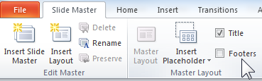
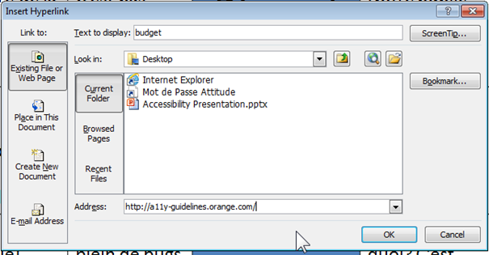
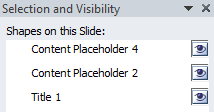
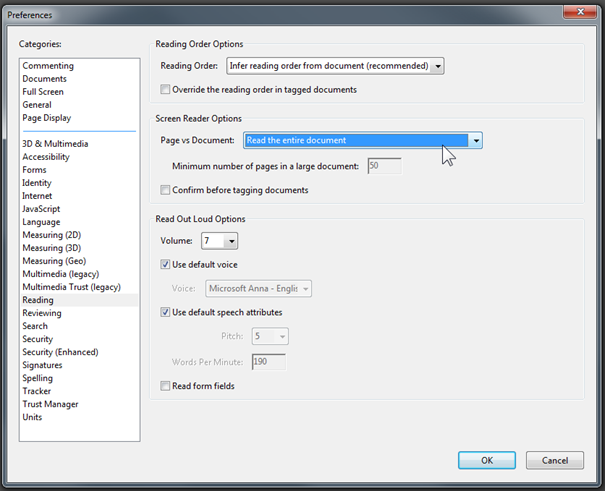
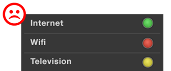

About
Documentation under the CC BY SA 3.0 license, source code of this site and examples are available on github.
The Orange logo and some images or screenshots are the property of Orange:
Copyright (C) 2016 Orange SA All rights reserved
List of the concerned files
Cookie management
You can change your preferences at any time directly from the Cookie Management Panel.
Your opinion matters ...
Have a bug or a feature request?
Please first check the issues and search for existing and closed issues. If your problem or idea is not addressed yet, please open a new issue.
General recommendations for content
Introduction
This section proposes general recommendations to ensure your contents are accessible whatever the medium used (email, Web, Word, etc.).
Check colours
- Make sure colour is not the only means used to convey information.
- Make sure there is sufficient contrast between the text colour and the background.
The contrast can be checked with Colour Contrast Analyzer :
- 4.5:1 for normal size text.
- 3:1 for big text.
Facilitate reading
- Align text to the left, don’t justify it.
- Use an easily-readable font family with a minimum size of 12 pixels.
- Use simple punctuation.
- Avoid italics, completely capitalised sentences; but always put a capital at the beginning of a sentence.
- Avoid textured backgrounds (images).
- Do not do too many repeated carriage returns or tabs to space contents (rather, use “Paragraph > Spacing” or “Indent” in Word for instance).
- Avoid layout and data tables.
- Avoid information-conveying content in images (graphs, schemas, diagrams,…)
- Signal the end of the document (for instance, an image saying “End of email”, or a white-on-white text “End of document”).
- Use simple, clear and short phrase turns: subject, verb, complement. One idea per sentence, with simple words.
- Explain complicated words.
- Use the present tense, preferably direct style, and active form (no subjunctive, no conjunctions).
- Use proper typographic characters: dash -, em-dash —, “rounded quotes”.
- Avoid foreign words, abbreviations except those that are genuinely used.
Provide accessible layout tables
Simplify tables, even if we know that email clients (including Outlook) still often demand to use tables for layout.
Checkpoints:
- In general, don’t do complex table layouts (merging cells, multicolumn,…).
- Avoid embedding layout tables (maximum two levels of embedding), but also:
- Don’t merge table cells, but use several simpler tables.
- Don’t keep empty cells.
- Don’t add background images.
- Make sure that the sequential order is correct (one can read left to right and top to bottom).
- Avoid complex data tables, graphs or schemas.
Emails accessibility
Here, a list of guidelines/best practices for writing messages that everyone can understand whether or not the recipient usesis using assistive technology.
What can be problematic?
- Images
- Fonts, colors and styles used
- Layout tables
- Links
Important
If your communication contains a lot of information and its layout needs to be complex:
- create the email with the method which is the easiest for you,
- add an accessible Word file (or text file) as an attachment containing the same level of information (but only in text!),
- specify that the equivalent accessible text is contained in the attachment.
"Everyday" emails
For all your everyday emails:
- Use simple, sans serif fonts: Arial, Calibri or Accessible DfA
- Adopt a font size at least equal to 10 points
- Put a capital letter at the beginning of each sentence but avoid whole sentences in capital letters
- Align the texts to the left (avoid justifying)
- Avoid too many italic or bold chunks of text or phrases
- Check the contrast between the font color and the background (Colour Contrast Analyzer) and limit the total number of colors used
- Use a neutral background: no decorative paper letter or background images
- Enter an alternative text for all the images (Office: right click on the picture> Format Picture > Alt text> "Description" field) or if the image is just descriptive, leave the "Description" field empty
- Use the "Title" and "Subtitle" styles of the "text format" menu if long mail, with several sections
- Add an emoticon alternative text, example: ";) [wink smiley] " instead of just ";)"
- Avoid animations, animated GIFs and luminosity flashes
- Write explicit link labels, for example: prefer "discover our offers" to "click here" or "find out more"
- Use the "Withdrawal, Spacing" functions to skip lines, example Office suite: Page Layout menu> Paragraph> Indent or Spacing or Right click on your text: "Paragraph ...")
- Check that the size of the buttons and clickable areas is sufficient : no smaller than 1cm (0.4")
- Configure your mail tool: HTML format by default, Outlook for example: File> Options> Mail> Compose messages
Pushmails
You have several options for creating an accessible Pushmail.
From a Word document
- Create a Word document accessible by following the Word recommendations.
- Then use the "Send to Mail Recipient" option. Add this Option the first time via File> Options> Quick access toolbar> “Send to Mail Recipient”
From "My Pushmails" (SPIP)
The tool provides natively accessible templates (don’t forget alternative text for the images) which does not prevent you from following the general recommendations for editorial content.

Creation from HTML (or other dedicated tool)
Compose the HTML code in an accessible way by following the main web recommendations.
Important: there are multiple email clients so there can be interpretation issues, the layout should rather be done via tables (using role=presentation in the <table> tag).
Links
- Improve email accessibility
- A Beginner’s Guide to Email Accessibility
- The Ultimate Guide to Accessible Emails
- Ideal Mobile Touchscreen Target Sizes
Accessibility recommendations Orange for content
General recommendations for content
The general recommendations describe the recommendations to respect whatever the type of content (web, email, Word document, etc.).
Specific recommendations by type of content
The following recommendations describe the specific rules to be followed depending on the type of document:
Creating accessible PDF documents
Introduction
Producing accessible PDF documents requires to follow recommendations to make sure they are structured through proper tagging, to make them understandable and useable by everyone (including users with assistive technology).
Below are listed guides aiming at providing necessary information in order to manually create accessible PDF documents based on the most popular softwares, then we will list the mandatory criteria to follow for PDF accessibility.
Guides to create accessible PDF documents
With Microsoft Word
You will find Microsoft Word recommendations as well as the PDF export procedure on our Creating accessible Word documents page.
With Adobe InDesign
You will find Adobe InDesign recommendations (in French) at Créer des documents PDF accessibles avec Adobe Indesign by the AcceDe PDF initiative.
With Adobe Acrobat Pro
You will find Adobe Acrobat Pro recommendations at Making PDF documents accessible with Adobe Acrobat Pro by the AcceDe PDF initiative.
Testing the accessibility of a PDF document
Install PDF Accessibility Checker (PAC).
This tool can, among other things, run automatic tests on a PDF document and check for accessibility issues.

Mandatory criteria
The following are the main criteria for a PDF document to be accessible, regardless of the method used to create it. Mandatory criteria will be useful for people creating PDF documents even when they don’t rely on publication software (Microsoft Word, Adobe InDesign, Adobe Acrobat Pro), e.g. developers whose applications generate PDF documents.
Document structure
Le document doit contenir a minima un titre de document et une langue par défaut (les changements de langues seront indiqués dans le document).
The document must at the very least include a document title and a default language (language changes must be indicated in the document).
The document is structured with titles, through the proper use of title “tags”. Moreover, long documents must include bookmarks to make navigation easier.
The use of headers and footers must help the user locating themselves in the document.
See PDF14.
Keyboard navigation and reading order
The reading order conveyed by an assistive tool, as well as keyboard navigation (through tabbing) must reflect the document’s structure. There must be no keyboard trap (keybaord navigation must be possible in the whole document without any blocking point).
Images
Images featuring information must have an appropriate alternative. Scanned documents must be covnerted to text through optical character recognition (OCR). Decorational images must be hidden.
Tables
A data table must be structured by a table “tag” containing at least one line. Table headers must be used appropriately. All lines must contain the same number of cells. Merged cells must clearly indicate if the merge was vertical or horizontal (rowSpan or colSpan attribute).
SeePDF6.
Links
Link texts must be explicit, or the links must provide an accessible alternative.
Lists
Lists must use the appropriate “tags”: list tag L, list item tag LI, list item label tag Lbl (for instance the item number, or the Lbody content tag of the list item).
See PDF21, section 14.8.4.3.3 of the PDF specification.
Forms
Form fields must have a name, a role, a value, and a state (if needed). Visually, labels must be correctly positioned towards the field. Mandatory fields and expected formats must be indicated. Fields must be accessible and keyboard-modifiable. Forms that can be submitted must provide a submit button.
See PDF5, PDF10, PDF12, PDF15, PDF22.
Colours
Colours must not be the only means to convey information.
Contrast between the colour of text and of its background must be sufficient:
- 4.5:1 for normal-size text;
- 3:1 for bigger text.
Creating accessible PowerPoint documents
This section contains recommendations for:
Creating accessible PowerPoint documents
Introduction
Producing accessible PowerPoint presentations requires following different rules. They are summarized below (and detailed guides are available on the WebAIM website).
In order to help you, PowerPoint includes a tool to check the accessibility of your presentation. This tool identifies the main errors and proposes different solutions.
Slide Layouts
Defining slide layouts is the first action to do in order to create an accessible presentation, it will ensure information have the correct reading order.
Use the Slide Master view: select the View tab > Slide Master to create or modify slides layouts.

Use the Master Layout submenu to add titles or footers.

Create as many layouts as types of slides needed.
Avoid adding text boxes or images directly into the presentation via the Insert menu but use the Slide Master view.
Note: if you edit the slide layout after you have created the slides, you must reapply the new model.
Presentation properties
Language
The main language must be defined in the tab File > Options > Language.
Every punctual change of language must be identified by selecting the text and: tab Review > Language > Set proofing language.
Other properties
Title, author and tags fields have to be completed in tab File > Info > Properties.

This information is accessible by everyone in Windows Explorer and are readable by the screen readers.
Use unique slide titles
Give every slide a unique and descriptive title, it allows screen reader users to clearly understand which slide they are on.
Wording
Avoid abbreviations and acronyms; explain them at the first occurrence.
If necessary, keep accentuation on capital letters (example: É or Ç): use the Insert tab > Symbol.
Formatting / layout
Use familiar sans serif fonts (such as Arial or Calibri), in a larger font size (18pt or larger).
Begin all sentences by a capital letter but avoid using all capital letters and excessive italics or underlines.
Avoid justifying the text; prefer left alignment.
In order to add white space between sentences and paragraphs, use option: right click on the text and select Paragraph… > Indents and Spacing.

Colors and contrasts
Use sufficient contrast for text and background colors
The presentation of text should have a contrast ratio of at least 4.5:1. Here are some examples on a white background:
- Foreground black : very good contrast, ratio = 21:1
- Foreground #767676 (dark grey), acceptable contrast, ratio = 4.54:1
- Foreground #AAAAAA (lighter grey), unacceptable contrast, ratio = 2.32:1
If you choose to not use the Orange Group colors guidelines, you can download the Colour Contrast Analyser tool; it will be useful for checking your contrasts.
Ensure that color is not the only means of conveying information
For people who can not see the colors or the shades of colors, it is important to convey the information differently.


Appropriate colors and contrast are necessary for people to see your presentations and understand their meaning.
Bulleted Lists or Numbered Lists
Always use the appropriate and native functions in order to create lists.

Pictures and other Images
Add alt text to images, shapes or SmartArt graphics in your PowerPoint slides.
In order to write a good alt text, make sure to convey the content and the purpose of the image and its context in a concise and unambiguous manner.
Right-click on an image and select Format Picture or Format Shape > Alt Text.

Type the alt text in the Description text box (but leave Title blank, this information is not conveyed to assistive technologies). If the picture is only decorative, leave the Description text box blank. Alternative text helps people who can’t see the screen to understand what’s important in images and other visuals. Do not use text in images to convey important information.
Note: If a picture or a chart is too complex to describe with alt text, you will need to provide a text description elsewhere. You can add the full description to the Notes section of the slide for example. In this case, put a very short description in the alt text, endings with the words: “full text description in the Notes section of this slide”.
For every downloadable file, it is necessary to specify its name, type, size and language (if different of the presentation language). Screen reader users sometimes scan a list of links, so the labels have to be simple and easy to understand.
Hyperlinks
Select the text to which you want to add the hyperlink, and then right-click. The text you selected displays in the “Text to display” box. This is the hyperlink text. If necessary, add a ScreenTip by clicking on the ScreenTip button.

For every downloadable file, it is necessary to specify its name, type, size and language (if different of the presentation language).
Screen reader users sometimes scan a list of links, so the labels have to be simple and easy to understand.
Tables
Use a simple table structure, and specify column header information.
Ensure that tables don't contain split cells, merged cells, nested tables, or completely blank rows or columns.
If a table is too complex, you will need to provide an additional description: Right-click Format Shape > Alt Text.
Audio or video file
For audio and video content, in addition to alt text, include closed captioning for people who are deaf or have limited hearing.
Video content must have synchronized captions and also needs a rich description of the visual components. Closed captions typically also describe audio attributes such as music or sound effects that occur off-screen. Subtitles typically contain a transcription (or translation) of the dialogue.
Audio content must have a transcript.
Avoid automatic launching or slide transitions.
Avoid content that blinks or flashes more than three times a second.
Set the reading order
The order in which the screen readers read the slide contents can be modified in the Selection pane.
On the Home tab, in the Drawing group, select Arrange > Selection Pane.
The elements of your slide are read in the reverse order listed in this pane.

Accessibility Checker
At least, run Accessibility Checker to make sure your content is accessible.
In File tab > Check for Issues.

Convert to PDF
Save you presentation as PDF: File tab > Save As and save as type PDF.
Check the « Document structure tags for accessibility » option.

PDF is often a better format to present PowerPoint presentations electronically.
Note: If your presentation have more than 50 slides, it is better to advise your readers to change the following setting in Adobe:
Edit > Preferences > Reading > Screen Reader Options > Page vs Document: "Read the entire document"

To check PDF document accessibility: download PDF Accessibility Checker (PAC 3).
For more detailed information
- PowerPoint Accessibility, WebAIM
- Microsoft Accessibility Support website
- (FR) Créer des documents bureautiques accessibles, DINISIC.
Check accessibility in PowerPoint slides
Automated tests
Office Accessibility Verification Tool
Start your tests with the Office Accessibility Verification Tool: File > Info > Check for Issues > Check Accessibility
Important: if you encounter some difficulties, try to save your document from within PowerPoint 2010 in ".pptx" format. The option to "Maintain compatibility with previous versions of Word" has to remains unchecked.
Color contrasts
Download Colour Contrast Analyser

Screen reader: JAWS & NVDA
To complete the verification, you can test with a screen reader. It helps you to simulate the configuration as the visually impaired and blind people. For further information to navigate with JAWS & NVDA
Self-Assessment Grids
These Grids are designed for self-assessment of the accessibility of Word and PowerPoint documents:
Videos, audios, and animated components
Introduction
All pre-recorded videos should have a transcript attached and closed captions available, and audio description available when necessary.
Provide a transcript
The transcription must reproduce textually all important informations conveyed by the content, these can be:
- the dialogues
- messages displayed on the screen
- any graphics and animations that bring information
- the name and title of person
- the name of things (buildings, products ...)
- the place
- what happens in the video
- The settings of the video (quality, black and white ...)
It must be provided in text, HTML (to be preferred) or Word and must be immediately after the video.
Perimeter: all.
Provide captions
Captions are a text version of the speech and sound on the video. They are displayed over the video. Captions should appear at the same time as the sound they are captioning and appear onscreen long enough to be read. Closed captions have to be preferred over open captions as they can be set on or off by the viewer while open captions are displayed to all viewers. They are mainly needed for users with hearing disabilities.
Perimeter: videos, animated components.
Provide audio descriptions when important visual information is not covered in what is said
Audio descriptions are separate audio tracks containing speech that describes the action, characters, and scenes of a video. It is played along with the video and it lets blind and vision-impaired users know what’s happening on the screen.
Audio description is not needed for talking heads only, or for text on slides as long as the slide text is included into what is said. Audio description might be needed for components like charts and diagrams.
Perimeter: videos, animated components.
Choose an accessible media Player
- Captions and audio description supported
- On/off command for captions, audio description and setup menu
- Buttons and controls usable without a mouse and properly labeled
- Accessible to keyboard-only users and screen reader users.
Media player must support captions, and audio descriptions. Users must be able to set these features on and off.
Users with disabilities may use navigational devices other than a mouse, such as keyboards or screen readers. For this reason, users should be able to operate the media player without using a mouse. The player should also label its buttons and controls, so that users with screen readers can hear the name of each button and control and select the correct option.
Perimeter: all.
Do not play videos automatically when the page loads
This can be confusing for many users, and the sound can interfere with assistive technologies such as screen readers.
Perimeter: all.
Do not use videos that have more than three flashes within a period of 1 second
This can provoke seizures in users with epilepsy.
Perimeter: videos, animated components.
All other relevant criteria such as color contrasts must also be enforced.
For more detailed information
Creating accessible Word documents
This section contains recommendations for:
Creating accessible Word documents
Designing accessible Word Documents requires following different rules.
They are summarized below (and detailed guides are available on the WebAIM Website).
In order to help you, Word includes a tool to check the accessibility of your presentation. This tool identifies the main errors and proposes different solutions.
Language
The main language of the document must be defined in the tab File > Options > Language.
Every change of language within the document must be identified by selecting the text and: tab Review > Language > Set proofing language.
Document properties
Title, author and tags fields have to be completed in tab File > Info > Properties.

These properties are readable by everyone in Windows Explorer and by the screen readers.
Headings
Give unique and descriptive headings allow users to clearly understand in which part they are on.
Use a “Heading 1” for the main content heading, and then a “Heading 2” for the major section headings and a “Heading 3” etc. (in the Home panel).
A good heading structure is often the most important accessibility criteria in Word documents.
Screen reader users have the ability to navigate long Word documents by heading structure.
Table of contents
Provide a table of contents for long documents using tab References > Table of Contents
It allows users to find information more easily in the document.
Wording
Use simple language: avoid abbreviations and acronyms (explain them at the first occurrence).
If necessary, keep accentuation on capital letters (example: É or Ç): use the Insert tab > Symbol
Formatting / layout
Use familiar sans serif fonts (such as Arial or Calibri), in a large font size (12pt or larger). Begin all sentences by a capital letter but avoid using all capital letters and excessive italics or underlines.
Use predefined styles for formatting content: "normal" style must be assigned almost everywhere (default style), the "quote" style for quotes, etc.
Avoid justifying the text; prefer left alignment.
Do not use carriage returns to skip rows nor successive tabs ("Tab" key on the keyboard ) for text formatting.
In order to add white space between sentences and paragraphs, use option: right click on the text and select Paragraph… > Indents and Spacing.
Do not use text boxes because their content is not interpreted by screen readers.
Use the page break option via the Insert Tab > “Page Break” menu to move to the next page.
Number pages of your document (Insert Tab > “Page Number”) to allow users to navigate easily.
Note: the « Tabs… » options can let you adjust the Tab stop position.
Colors and contrasts
Use sufficient contrast between text and background colors
The presentation of text should have a contrast ratio of at least 4.5:1. Here are some examples on a white background:
- Foreground black : very good contrast, ratio = 21:1
- Foreground #767676 (dark grey), acceptable contrast, ratio = 4.54:1
- Foreground #AAAAAA (lighter grey), unacceptable contrast, ratio = 2.32:1
If you choose to not use the Orange Group colors guidelines, you can download the Colour Contrast Analyser tool; it will be useful for checking your contrasts.
Ensure that color is not the only way to convey content
For people who cannot see the colors or the shades of colors, it is important to convey content differently.

Bulleted Lists or Numbered Lists
Always use the appropriate and native functions to create lists:
- Ordered (numbered) lists are used to present a group of items (words, sentences…) that follow a sequence
- Unordered (bulleted) lists are used for a group of items without a sequence

Alternative Text for pictures, shapes, chart, SmartArt graphic, or other graphical content
The alternative text has to convey the content and the purpose of the image and its context in a concise and unambiguous manner.
Right-click on an image and select Format Picture or Format Shape > Alt Text.
Enter the alt text in the Description text box (but leave Title blank, this information is not conveyed to assistive technologies).
If the picture is only decorative, leave the Description text box blank.
Alternative text helps people who can’t see the screen to understand what’s important in pictures and other visuals.
Note: if you use a layout option other than "In Line With Text" (by right-clicking on the image an “Wrap Text” or the “Picture Tools” Tab), the image and text present in the description of image (Alt Text) will be ignored by some screen readers.
Audio or video file
For audio and video content, in addition to alt text, be sure the video or audio as well as the player are accessible.
See our recommendations for audio or video files.
Links
Specify clear and accurate link text: it must make sense as standalone information to understand the destination target.
Specify when links are opened in a new window:Insert tab > Hyperlink > SreenTip
Note: a blind person asks his screen reader to list all the links on a page. Each link text will therefore be read isolated from its visual context.
Data Tables
Use a simple table structure, and specify column header information.
Ensure that tables don't contain split cells, merged cells, nested tables, or completely blank rows or columns.
If a table is too complex, you will need to provide an additional description: Right-click Table Properties > Alt Text
Finally, tables should not be used for formatting purposes : use the "Columns" option on the “Page Layout” tab to create a columns layout.
Accessibility Checker
At least, run Accessibility Checker to make sure your content is accessible. It can detect the main errors and suggests some solutions.
In File tab > Check for Issues.
Important: if you encounter some difficulties, try to save your document from within Word 2010 in ".docx" (or ".pptx") format. The option to "Maintain compatibility with previous versions of Word" has to remains unchecked.
Converting to PDF
If you want to save you presentation as PDF, select: File tab > Save & Send and create PDF document.
Check if the « Document structure tags for accessibility » option is selected.
Note: with Word 2010, generated PDF documents may have accessibility issues (especially with the images vocalization). These issues have been fixed in later versions of Microsoft Office.
For more detailed information
- Word Accessibility, WebAIM.
- check PDF document accessibility: download PDF Accessibility Checker (PAC 3).
- Microsoft Accessibility Support website
- (FR) Créer des documents bureautiques accessible DINSIC.
Check accessibility in Word
Automated tests
Office Accessibility Verification Tool
Start your tests with the Office Accessibility Verification Tool: File > Info > Check for Issues > Check Accessibility
Important: if you encounter some difficulties, try to save your document from within Word 2010 in ".docx" format. The option to "Maintain compatibility with previous versions of Word" has to remains unchecked.
Color contrasts
Download Colour Contrast Analyser
Screen reader: JAWS & NVDA
To complete the verification, you can test with a screen reader. It helps you to simulate the configuration as the visually impaired and blind people. For further information to navigate with JAWS & NVDA
Self-Assessment Grids
These Grids are designed for self-assessment of the accessibility of Word and PowerPoint documents: